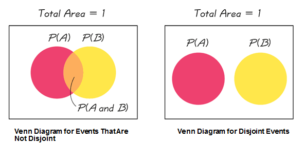

Unit 2 Probability
3.3 The Addition Rule
Disjoint Events
Compound Events: Combining two or more simple events.
Mutually Exclusive (or Disjoint) events: Compound events that CANNOT OCCUR at the same time
The Addition Rule
The Addition Rule: Probability of Event A OR Event B occurring.
\(P(A \text { or } B)=P(A)+P(B)-P(A \text { and } B)\)
Example: In our bag of poker chips, what was P(B)? P(1)? What is P(Blue or 1)?
\(P(B)=\frac{4}{9}\)
\(P(1)=\frac{3}{9}\)
To calculate P(Blue or 1), we will need P(Blue and 1):
\(P(\text {Blue } \text {and} 1)=\frac{1}{9}\)
\(P(B \text { or } 1)=P(B)+P(1)-P(B \text { and } 1)=\frac{4}{9}+\frac{3}{9}-\frac{1}{9}=\frac{6}{9}\)
Example: In a deck of cards, what is the probability of drawing a King or a Diamond? P(K or ◊) =
P(K or ◊) = P(K) + P(◊) – P(K and ◊) = 13/52 + 4/52 – 1/52 = 16/52 = 4/13 or 0.3077
Example: Let's roll 2 six-sided dice.
| 1 1 | 1 2 | 1 3 | 1 4 | 1 5 | 1 6 |
|---|---|---|---|---|---|
| 2 1 | 2 2 | 2 3 | 2 4 | 2 5 | 2 6 |
| 3 1 | 3 2 | 3 3 | 3 4 | 3 5 | 3 6 |
| 4 1 | 4 2 | 4 3 | 4 4 | 4 5 | 4 6 |
| 5 1 | 5 2 | 5 3 | 5 4 | 5 5 | 5 6 |
| 6 1 | 6 2 | 6 3 | 6 4 | 6 5 | 6 6 |
n(S) = 36
- P (sum of 3)
\(\frac{2}{36}=.056\)
- P (sum of 7)
\(\frac{6}{36}=.167\)
- P (sum of 1)
\(\frac{0}{36}=0\)
- P (sum < 13 )
\(\frac{36}{36}=1\)
- P (first die is 3)
\(\frac{6}{36}=.167\)
- P(second die is 5)
\(\frac{6}{36}=.167\)
- P (first is a 3 or second is a 5)
\(\frac{6}{36}+\frac{6}{36}-\frac{1}{36}=\frac{11}{36}\)
You Try One: In a bag, you have
4 blue chips numbered 1, 2, 3,and 4
3 red chips numbered 1, 2, and 3
2 green chips numbered 1 and 2.

You randomly select one chip from the bag. Find:
- P (blue or red)
\(P(B)+P(R)-P(B a n d R)=\frac{4}{9}+\frac{3}{9}-\frac{0}{9}=\frac{7}{9}=.7778 \text{ B} \text { and } \text{R}\) are disjoint events.
- P (blue or 3)
\(P(B)+P(3)-P(B a n d 3)=\frac{4}{9}+\frac{2}{9}-\frac{1}{9}=\frac{5}{9}=.5556\)
- P (red or 3)
\(P(R)+P(3)-P(R a n d 3)=\frac{3}{9}+\frac{2}{9}-\frac{1}{9}=\frac{4}{9}=.4444\)
- P (green or 3)
\(P(G)+P(3)-P(G a n d 3)=\frac{2}{9}+\frac{2}{9}-\frac{0}{9}=\frac{4}{9}=.4444\)
Using the Addition Rule with a Contingency Table
The following table gives the number of people with health insurance coverage in the U.S. in 2018. Note that the numbers are in millions of people.
Source of data| (In millions) | Private insurance | Private insurance (Marketplace) | Public Insurance | Uninsured | TOTALS |
|---|---|---|---|---|---|
| Adults age 18-64 | 128.2 | 8.4 | 38.5 | 26.4 | 201.5 |
| Children age 0-17 | 38.5 | 1.7 | 30.7 | 3.8 | 74.7 |
| TOTALS | 166.7 |
10.1 |
69.2 |
30.2 |
276.2 |
Find the probabilities if you randomly select one person:
- P(Adult)
\(\frac{n(E)}{n(S)}=\frac{201.5}{276.2}=.7395\)
- P(Uninsured)
\(\frac{30.2}{276.2}=.1093\)
- P(Adult and Uninsured)
\(\frac{26.4}{276.2}=.0956 ; P(\text { child } A N D \text { uninsured })=\frac{3.8}{276.2}=.0138\)
- P(Adult or Uninsured)
\(P(a d u l t)+P(u m i n s u r e d)-P(\text { adult } A N D \text { uninsured })=\frac{201.5}{276.2}+\frac{30.2}{276.2}-\frac{26.4}{276.2}=\frac{205.3}{276.2}=.7433\)
- P(Child)
\(\frac{74.7}{276.2}=.2705\)
- P(public insurance)
\(\frac{69.2}{276.2}=.2505\)
- P(private insurance)
\(\frac{166.7}{276.2}+\frac{10.1}{276.2}=\frac{176.8}{276.2}=.6401\)
- P(Child or private insurance)
\(\frac{74.7}{276.2}+\frac{176.8}{276.2}-\frac{38.5}{276.2}-\frac{1.7}{276.2}=\frac{211.3}{276.2}=.7650\)
- P(Child or no private insurance)
P(child) + P(private insurance) - P(child AND private insurance) =\(\frac{74.7}{276.2}+\frac{99.4}{276.2}-\frac{34.5}{276.2}=\frac{139.6}{276.2}=.5054\)
Group Discussion: